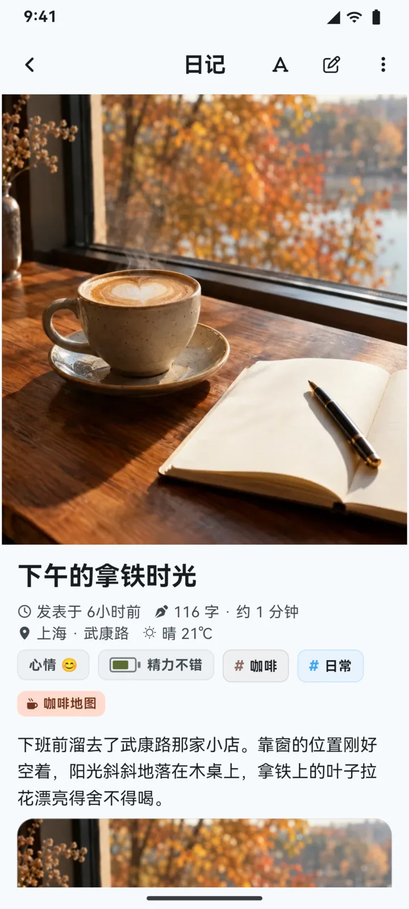
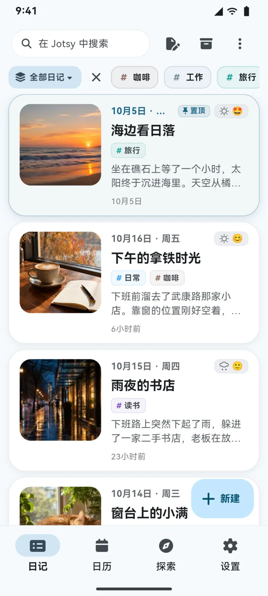
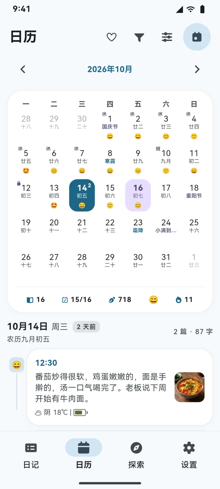

功能
写下来，也读得回去
想写什么，随手就写
富文本、照片、视频和录音随手插入，工具栏就贴在键盘上方。可以从 8 个内置模板开始写，每篇新日记都有自己的草稿，自动保存，不怕丢稿。
- 23 种编辑工具
- 日记模板
- 草稿箱
- 心情、天气与地点
分本收纳，像一本本书
一篇日记可以同时放进几本。分章节、排书序、设写作目标，还能整本导出成带目录的书；私密的本子可以隐藏或上锁。
- 智能日记本
- 章节与书序
- 隐藏与上锁
- 导出成书
农历、节假日与纪念日
一张月历上看得到农历、节气、休班和每天的心情；纪念日与倒数日可以按公历或农历每年重复。
- 年度热力图
- 任意区间统计
- 照片日历
时间会替你记得
那年今日自动翻出往年的同一天，心情与精力的变化一目了然；写一颗时间胶囊，到了那天才能打开。
- 那年今日
- 时间胶囊
- 媒体画廊
- 标签云
定制
80 种主题色，整个应用跟着换
日记卡片、阅读页和正文字体也都能细调。用不到的功能，可以在「功能管理」里关掉，界面只留下你要的。
试试看，这个网页也会跟着换色
隐私
你的日记，只在你的手机里
没有账号体系，也没有自己的服务器。日记、照片和设置都只保存在本机。
-
无账号，无服务器
不收集任何数据，也不含任何第三方统计 SDK。
-
应用锁与私密日记本
用指纹、面容或锁屏密码解锁；私密本子里的日记，不会出现在别的地方。
-
加密备份
完整备份可以设密码，使用 AES-256 加密。
数据
数据随你带走
Jotsy 不会把你锁在里面。
-
网盘备份
备份到你自己的网盘或服务器，也能直接从远端恢复。
WebDAV · S3 兼容存储 · Google Drive · OneDrive · Dropbox · 百度网盘 · 阿里云盘
-
多格式导出
单篇、多选或整本导出；Markdown 可以直接放进 Obsidian。
PDF · Word · Markdown · 网页 · TXT · CSV
-
从 18 款应用搬过来
写入前先预检，再选合并或覆盖；颜色、字号和附件都会保留。
Day One · Journey · Diarium · Daylio · 印象笔记 · Google Keep · 手机厂商云笔记…
支持的应用与导出方法
更新
一直在变得更好
每个版本都附中英文更新说明；装好之后，新版本会直接在应用里提示。
查看全部版本-
v0.7.0
最新- 日记本：章节与书序、智能日记本、隐藏与上锁，还能整本导出成书。
- 日记模板与草稿箱：8 个内置模板，可按时间段自动套用；每次新建都是一份独立草稿。
- 功能管理与新的颜色面板：不用的功能可以关掉，在工具栏里就能自由取色。
-
v0.6.1
- 应用内更新全面重做：在应用内下载、校验并安装，多条线路测速择优、断线续传。
- 日记多了也更快：一万篇日记下，按时间排序翻页快约 10 倍。
-
v0.6.0
- 网盘备份：WebDAV、S3 兼容对象存储与主流网盘。
- 从 18 款应用导入，包括 6 家手机厂商与 WPS 的云端笔记。
- 日历全面升级并加入纪念日；卡片、阅读页与正文排版可深度定制。
常见问题
你可能想问
没找到答案？欢迎提交 Issue，或者加入 QQ 交流群 678136434。
换手机了，日记怎么迁移？
在旧手机的 数据管理 › 导出数据 中生成备份 ZIP，传到新手机后用 导入数据 恢复即可；也可以用网盘备份在两台设备之间中转。
卸载应用会丢数据吗？
会。数据只存在本机，卸载或清除应用数据都会把它删掉。建议定期导出备份，或者使用网盘备份。
该下载哪个安装包？
绝大多数手机选 arm64-v8a；较老的 32 位设备选 armeabi-v7a；x86_64 用于模拟器。不确定时选 arm64-v8a。
电脑上：Windows 10 及以上（x64）选安装程序，不想安装可以用便携版 zip；Linux（x64，需要 GTK 3）下载 .tar.gz，解压后运行 install.sh 即可加入应用菜单，播放录音需要 GStreamer。
安装包安全吗？以后怎么更新？
安装包由 GitHub Actions 从公开的源代码构建并签名，每个版本都附带 SHA256SUMS.txt，可以核对下载的文件。
装好之后，Jotsy 会在应用内提示新版本并直接安装：自动选择最快的线路、断线续传，安装前核对大小、SHA-256、包名与签名。
Windows 与 Linux 版同样会提示新版本，并在浏览器里经镜像下载新的安装包，覆盖安装即可，日记数据保留。Windows 安装程序暂未做代码签名，SmartScreen 可能提示“未知发布者”。
真的免费吗？
是的。Jotsy 以 GPL-3.0 协议开源，免费使用，没有广告，也不包含任何第三方统计 SDK；全部源代码都在 GitHub 上。
有 iOS 版吗？
暂时没有，目前发布 Android（7.0 及以上）、Windows（10 及以上，x64）与 Linux（x64）版本。
今天，也值得被记下来
免费下载，支持 Android 7.0+、Windows 10+（x64）与 Linux（x64）。装好之后，新版本会在应用里提示。
v0.7.0 2026-10-20
暂时没有 iOS 版，目前发布 Android、Windows 与 Linux 版本。
其他安装包与下载线路
镜像为第三方公共服务。对完整性有要求时，可以选 GitHub 直连，或对照下方从 GitHub 读取的 SHA-256；装好后的应用内更新都会核对签名。
SHA-256 校验值